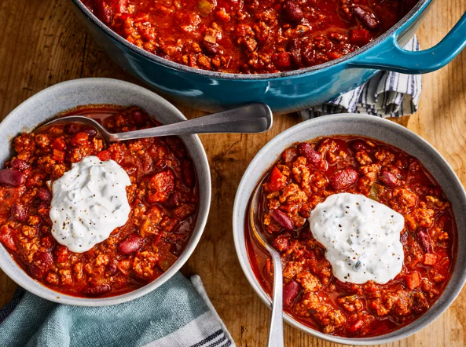

Chili
Home

If you're looking for hearty, filling chili that's just the
right level of spicy, this is the chili recipe for you. The long ingredient list worth
it. You might as well just make a double batch because you'll be craving more as soon
as it's gone.
Ingredients
- 4 tablespoons olive oil
- 1 yellow onion, dhopped
- 1 red bell pepper, chopped
- 1 anaheim chile pepper, chopped
- 2 red jalapeno pepper, chopped
- 4 cloves garlic, minced
- 2.5 lbs lean ground beef
- 1/4 cup worchestershire sauce
- 1 pinch garlic powder, or to taste
- 2 beef bouillion cubes
- 12oz can of light beer, such as Coors
- 28 oz can crushed San Marzano tomatoes
- 14.5 oz can fire-roasted diced tomatoes
- 12 oz can tomato paste
- 1/2 cup white wine
- 2 tablespoons chili powder
- 2.5 tablespoons ground cumin
- 1 tablespoon brown sugar
- 1 tablespoon chipotle pepper sauce
- 2.5 teaspoons dried basil
- 1.5 teaspoons smoked paprika
- 1 teaspoon salt
- 1/2 teaspoon dried oregano
- 1/2 teaspoon ground black pepper
- 2 16 oz cans dark red kidney beans, such as Bush's
- 1 cup sour cream
- 3 tablespoons fresh cilantro, chopped
Directions
- Gather all ingredients. Heat oil in a large pot over medium heat;
cook and stir onion, bell pepper, Anaheim pepper, jalapeno peppers,
and garlic in the hot oil until softened.
- Meanwhile, heat a large skillet over medium-high heat. Cook and stir beef
in the hot skillet until browned and crumbly, 5 to 7 minutes.
- Add Worcestershire sauce and garlic powder. Crumble
bouillon cubes over beef and add beer. Continue to cook,
scraping any browned bits from the bottom of the skillet, until liquid is hot, about
3 minutes.
- Stir beef mixture into pepper mixture.
- Stir crushed tomatoes, diced tomatoes, tomato paste, and
wine to the beef mixture. Season with chili powder, 2 tablespoons
cumin, brown sugar, pepper sauce, basil, paprika, salt, oregano, and black
pepper.
- Bring to a boil and reduce heat to medium-low. Cover and simmer until meat and vegetables
are very tender and flavors have developed in the chili, about 90 minutes, stirring
occasionally.
- Mix kidney beans into beef and vegetables. Continue to simmer until beans
are hot, about 30 minutes more.
- Blend sour cream, cilantro, and remaining 1/2 teaspoon cumin
in a food processor until smooth. Serve sour cream mixture with chili.
Notes
- If you don't have time to simmer your chili for hours, you can thicken it with cornmeal,
cornstarch, or all-purpose flour. Add 1 tablespoon of cornmeal directly to the pot and allow
it to simmer for about 10 more minutes to thicken up. Or add a cornstarch or flour slurry —
this means 1 tablespoon of water mixed with 1 tablespoon of cornstarch or 2 tablespoons of
water mixed with 1 tablespoon of flour. If you add flour or cornstarch directly to the chili,
it will clump. Instead, gradually whisk in the slurry then simmer for 10 minutes.
- Package completely-cooled chili into an airtight container and store it in the refrigerator
for up to four days.
- If you want your chili to last longer, you should freeze it. Ladle completely cooled individual
servings of chili into zip-top freezer bags (make sure to squeeze out the excess air). Label
and date the bags, and store them in the freezer for up to three months.
Home